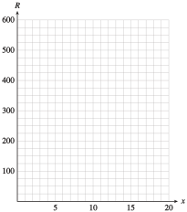

Chapter 4 Applications of Quadratic Models
An important part of modeling is optimization, finding the best possible solution to a particular problem. For qudaratic models, this often involves finding the vertex of the graph where the maximum or minumum value of the output variable occurs.
For example, biologists conducted a four-year study of the nesting habits of a species of wrens, The bar graph shows the clutch size (the number of eggs) in 433 nests. Why is 8 or 9 eggs the most common clutch size? Does that number increase the birds' chances of survival?
The average weight of the young birds decrreases as the size of the brood increases, and the survival of individual nestlings is linked to their weight. Which clutch size produces the largest average number of survivors?
The graph shows the number of survivors for each clutch size in the study, along with the curve of best fit. The equation for the curve is \(y=-0.0105x^2+0.2x - 0.035\text{.}\) Looking at the graph, the optimum clutch size for maximizing the survival of the nestlings is about 9 eggs. How does this optimum clutch size compare with the most frequently observed clutch size in the study?
Investigation 4.1. Revenue from Theater Tickets.
The local theater group sold tickets to its opening-night performance for $5 and drew an audience of 100 people. The next night they reduced the ticket price by $0.25 and 10 more people attended; that is, 110 people bought tickets at $4.75 apiece. In fact, for each $0.25 reduction in ticket price, 10 additional tickets can be sold.
-
Fill in the table
No. of price reductions Price of ticket No. of tickets sold Total revenue \(0\) \(5.00\) \(100\) \(500.00\) \(1\) \(4.75\) \(110\) \(522.50\) \(2\) \(\hphantom{0000}\) \(\hphantom{0000}\) \(\hphantom{0000}\) \(3\) \(\hphantom{0000}\) \(\hphantom{0000}\) \(\hphantom{0000}\) \(4\) \(\hphantom{0000}\) \(\hphantom{0000}\) \(\hphantom{0000}\) \(5\) \(\hphantom{0000}\) \(\hphantom{0000}\) \(\hphantom{0000}\) \(6\) \(\hphantom{0000}\) \(\hphantom{0000}\) \(\hphantom{0000}\) \(8\) \(\hphantom{0000}\) \(\hphantom{0000}\) \(\hphantom{0000}\) \(10\) \(\hphantom{0000}\) \(\hphantom{0000}\) \(\hphantom{0000}\) -
On the grid below, plot Total revenue on the vertical axis versus Number of price reductions on the horizontal axis. Use the data from your table.
 -
Let \(x\) represent the number of price reductions, as in the first column of your table. Write algebraic expressions in terms of \(x\) for
The price of a ticket after \(x\) price reductions:
\begin{equation*} \text{Price} = \end{equation*}The number of tickets sold at that price:
\begin{equation*} \text{Number} = \end{equation*}The total revenue from ticket sales:
\begin{equation*} \text{Revenue} = \end{equation*} Enter your expressions for the price of a ticket, the number of tickets sold, and the total revenue into the calculator as \(Y_1, ~Y_2,\) and \(Y_3\text{.}\) Use the Table feature to verify that your algebraic expressions agree with your table from part (1).
Use your calculator to graph your expression for total revenue in terms of \(x\text{.}\) Use your table to choose appropriate window settings that show the high point of the graph and both \(x\)-intercepts.
What is the maximum revenue possible from ticket sales? What price should the theater group charge for a ticket to generate that revenue? How many tickets will the group sell at that price?